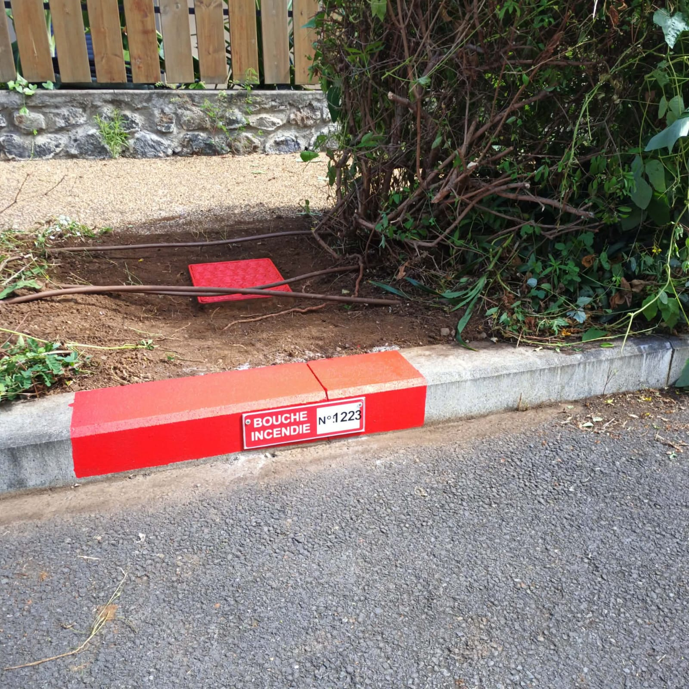

Réglementation, fréquence, normes, tarifs : tout ce que vous devez savoir sur vos équipements.
Contrôle annuel obligatoire. Débit minimal 60 m³/h sous 1 bar de pression résiduelle.
Essai sous pression annuel. Obligatoire dans tout bâtiment IGH ou immeuble > 18 m.
Contrôle annuel. Pression et débit aux exigences. Tuyau semi-rigide testé tous les 5 ans.
Vérification annuelle. Protection sanitaire du réseau d'eau potable contre les retours.
Volume utile, accessibilité pompiers, signalisation réglementaire selon le règlement départemental 974.
Si votre situation n'entre pas dans les cases ci-dessus, le téléphone reste le moyen le plus rapide d'obtenir une réponse claire.